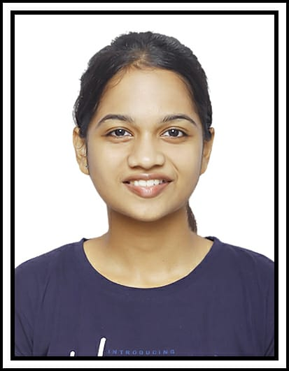

Priyanka Angane

Professional Summary
AI & Data Science graduate with hands-on experience in Machine Learning,
Predictive Modeling, and Agentic AI workflows. Proficient in Python and
experienced in building ML pipelines, automation frameworks, and behavioral
analytics solutions. Skilled in Microsoft Purview, Intune, and Azure
Information Protection. Passionate about building intelligent,
data-driven solutions.
Technical Skills
- Programming Languages: Python, C++, SQL
- Machine Learning & AI: Scikit-learn, XGBoost, MTCNN, FaceNet, SVM, CrewAI
- Libraries: Pandas, NumPy, Matplotlib, Seaborn
- Microsoft Security: Microsoft Purview, Microsoft Intune, Azure Information Protection (AIP), Data Loss Prevention (DLP)
- Tools: Jupyter Notebook, Git, GitHub, VS Code, Streamlit
Professional Experience
Technical Specialist
Noventiq India
Mumbai, Maharashtra
June 2025 - Present
- Deployed Microsoft Purview across Outlook by implementing Data Loss Prevention (DLP) policies and trainable classifiers.
- Configured Azure Information Protection (AIP) sensitivity labels to protect confidential organizational data.
- Implemented Microsoft Intune device management policies integrated with AIP for more than 50 endpoints.
Projects
Automated Data Analysis Pipeline
- Built a multi-agent AI pipeline using CrewAI.
- Automated data preprocessing, EDA, and insight generation.
- Reduced analysis time from hours to minutes.
User Success Prediction in AI Workspace
- Developed an XGBoost model using 400,000+ user activity events.
- Created a Streamlit dashboard for user risk prediction.
- Achieved 3.3x better performance than baseline models.
Customer Churn Prediction
- Built a Random Forest model with 85% accuracy.
- Performed feature importance analysis and model evaluation.
Face Recognition Attendance System
- Developed a face recognition attendance system using MTCNN, FaceNet and SVM.
- Achieved 80% classification accuracy.
Education
Bachelor of Engineering (Artificial Intelligence and Data Science)
Terna Engineering College
University of Mumbai
2021 - 2025
Certifications
- GitHub Copilot Certification - Microsoft
- Advanced LLMs with Retrieval-Augmented Generation (RAG)
- Supervised Machine Learning - DeepLearning.AI
Other
Contact Me
My Hobbies